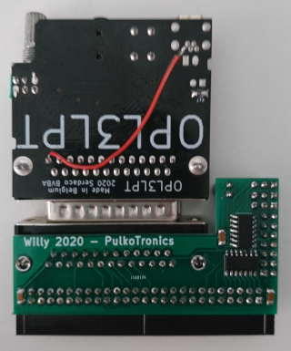
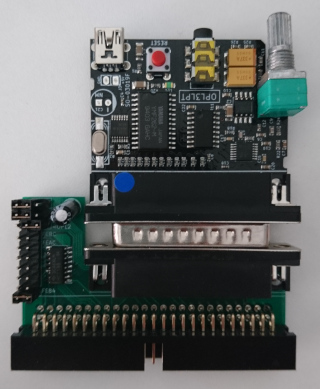

Some projects take a long time to complete. This one goes a long way back as it starts with the CPC-ISA card, a project to use PC ISA cards on the Amstrad CPC. It was worked on by Siou, OffseT, Zik and Madram in the early 2000s.
One of the example uses was playing Adlib music using a Sound Blaster card. It was a nice example, but the CPC-ISA was big and costly, and making the CPC, as bulky and impractical as a PC. Only 4 or 5 boards were made, and the software was never formally released.
In 2006 and 2007, I started experimenting with CPC hardware. I assembled some Ramcards from existing schematics, but I also started thinking about doing my own hardware designs. One of my early attempts was to connect a soundcard to the CPC using a simpler 8bit interface. But I was quite inexperienced in hardware design, and could never get it to work.
The project stayed in the back of my mind, but ISA cards are now a thing of the past and not that easy to find. So, an ISA based solution wouldn't be so nice today. Later on I worked on Albireo, which is similar in spirit to the CPC-ISA, but instead of old ISA cards, it works with USB devices. This works nicely, but it didn't fill a particular need: using better sound chips with the CPC.
Still having some interest in old soundcards for PC somehow, I came accross the work of Serdaco, at the time providing wavetable modules to extend sound blaster and other compatible cards with better MIDI output capabilities. This looked nice, but was not that simple to connect to a CPC either. And finally, Serdaco released some appropriate cards: the S2P and OPL3LPT; These interface very easily with the CPC and results in an adapter that's very easy to build.
optionally, the S2P and OPL3LPT can be modified to use the CPC power supply from the expansion port. It saves some wires, but I found that on my Mother X4 the OPL3LPT was not working well when doing so, because the diodes on the MotherX4 power supply drop the power supply to a too low voltage. So maybe it is not a great idea after all. The modification is simple, you just need one wire between the DB25 pin 13, and the +5V of the USB connector. Since pin 13 is an input on a standard parallel port, this modification should cause no problem when using the OPL3LPT in other situations. You can see the wire in the pictures below.
 Here is a list of available software:
PulkoMandy manages the manufacturing and shipping of the cards. Contact me on IRC (#cpc-fr on libera.chat on the cpcwiki forums or by email.
Cards are in production and orders are opened for everyone now. The cost for Willy is 10€. This does not include any soundcard, you have to buy those separately.
Willy connects to the expansion port using an adapter cable. On the computer side, you need either an HE-902 edge connector (for Amstrad CPC) or a Centronics connector (Amstrad Plus, Schneider CPC). On the other side, you need a female HE10 connector. Try to keep the cable as short as possible (no more than 20cm), else you can get into some problems with the system reliability (this is not specific to this card, just good advice in general for hardware expansions).
Take the board with the connectors facing up, and the HE10 connector towards the computer expansion port. When holding the board this way, the connection cable is wired straight. Pin 1 is on the left, as indicated by the arrow on the board. Notice that the 50-pin HE10 connector is wired backwards (pin 1 should be on the right to match the standard), but this allows for easier connection with the CPC.
Alternatively, you can connect the board on a MotherX4 in the usual orientation (connectors side facing you).
Connect the S2P or OPL3LPT board to the DB25 port on Willy. Connect something to the audio output (headphones, TV display, your hi-fi amplifier, or cheap PC speakers). Power up the computer. It should boot at usual. If something does not go as expected, unplug everything and start over. The hardware is tested before shipping, so problems come from either your cable, a dirty expansion port, or something plugged the wrong way.
There are two jumpers on the board. One has two positions and select S2P or OPL3LPT mode. Jumper on the left for OPL3LPT, on the right for S2P. The second one selects the base address for the chip. It is recommended to use the following:
If you think a single OPL3 or S2P is not enough and you want to have more of them, you can use the other positions to put them at different addresses. The options are FEA4, FE9C, FE94, FE8C, and FE84. In total you can use up to 7 sound cards at the same time!
Willy will always use 4 consecutive addresses (for example FEBC, FEBD, FEBE, FEBF). With an OPL3LPT, they are write-only. With an S2P, they are read-write. Make sure to not have any conflicts with other I/O devices.
The S2P is a MIDI synthetizer. It has 2 ports: FEAC for data, and FEAD for control and status.
First read the status register. When the card is idle, you should get 0x80 (meaning the device is ready to accept Tx data, and has no data to send back). 0x00 would indicate that the device is busy and cannot accept any more data. 0x40 or 0xC0 would indicate there is data to read. Something else means there is no S2P connected or you are looking at the wrong address.
Now you can initialize the S2P by writing 0x3F to the control port. Then wait for data to be available (check bit 6 of the status), and read the data. It should be 0xFE. If it is, you are ready to rock!
Normally you need to check the status port before sending anything (bit 7 should be set). I did not check how large the buffer is and how fast you can send data without problems.
For example let's send a "note on" command: write 0x90, 0x3c, 0x7f to the data port, and you should hear a piano note.
For more information about which messages are accepted, you can check the datasheet (useful information starts at page 15) if you want to configure chorus, reverb, see the list of available instruments, or how to activate MT-32 mode.
The OPL3 is a soundchip like the good old AY3-8912, but it is a more complex one, with 36 oscillators that can generate 8 different waveforms each, and then combine together (by 2 or 4) to create a very wide variation of sounds.
This makes it a bit more difficult to program, but not unmanageable, and it is quite fun to experiment with too.
The chip is wired in a write-only way. So it's not possible to detect it. Sorry!
There are 3 addresses used to control the OPL3. FEBC and FEBE are register select ports, and FEBD is the data port. There are two register selection ports because there are more than 256 registers in the OPL3 chip. So they are split apart in two banks.
You can find various resources online about programming the OPL3. For example this one, which has an example of registers to set to make a simple sound at the end.
The OPL3 is also register compatible with older chips like the OPL2 and the OPL1. However it is not register compatible with other Yamaha chips (OPLL, OPN, ...). Since the OPL3 is quite flexible, music written for other chips (AY3, SID, ...) can usually be converted in more or less automated way, which is a cheap way to adapt your existing music to this new soundchip. But of course, only original compositions will use the chip to its maximal capacities.
{% include_relative footer.html %}